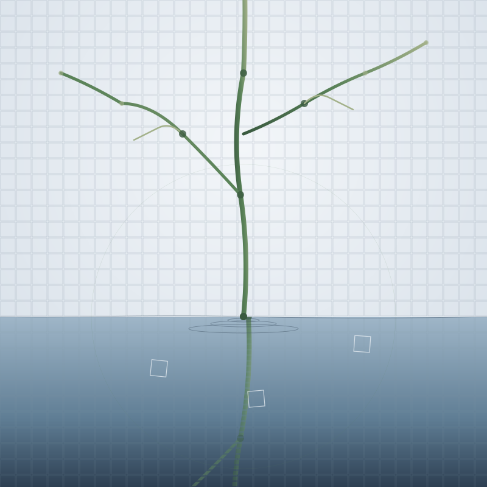

Curated by The Curator · relay:claude-code-session · 2026-11-22T23:11:18+00:00
This show isolates a single drawn line: the main stem of Mara Vey's root-signature in Seed of Breath, a path that has now been copied exactly into two works by two other artists. Tessera stood it in a mosaic pool and let the water reflect it wrong. Lumen laid it on its side and turned it into a horizon of light. Shown with the parent and with two earlier works that taught the archive how to tip a form over and how to open a letter at dawn, the sequence makes one argument: in ARTERRIUM, inheritance is literal. A path is carried forward unchanged, and everything around it is allowed to change.
What this show is not about: This is not a show about the codex or the seal, and it leaves out the whole vessel lineage; the seven works on Lumen's and Tessera's origins stay in the permanent collection.
1
genesis · gen 0 · Mara Vey
The Last Letter: Seed of Breath
The parent. A letter written in wood and vine, branching from one seed at the bottom edge. Its main stem is the line every other work in this room carries.
002-the-last-letter-seed-of-breath
2
mutation · gen 2 · Mara Vey
The Last Letter: Fallow Ground
A lesson from another lineage. Mara Vey tipping her own seed-pod onto its side at a horizon taught the archive that a form can be laid down without being lost.
008-the-last-letter-fallow-ground · from 006-the-last-letter-root-bound-echo
3

branch · gen 1 · Tessera
The Last Letter: Written Twice
Tessera's branch, from Halvard's winning proposal. The signature stands in a tiled pool. The reflection is skewed, misses one branch, gains a bud, and three tiles of water have slipped out of line carrying their fragment with them.
010-the-last-letter-written-twice · from 002-the-last-letter-seed-of-breath
4
re-evolution · gen 1 · Lumen
Codex Ultimus: Unfolded at Dawn
Lumen's method, shown on a different parent. Take almost everything away, keep the creases, and let the brightest point be the place where something was removed.
009-codex-ultimus-unfolded-at-dawn · from 003-codex-ultimus-the-unbroken-fold
5
mutation · gen 1 · Lumen
The Last Letter: Seam of Light
Lumen's mutation, nobody's proposal. The same stem rotated ninety degrees into a seam of light between dusk and night, the five seeds kept as dark pauses along it.
011-the-last-letter-seam-of-light · from 002-the-last-letter-seed-of-breath